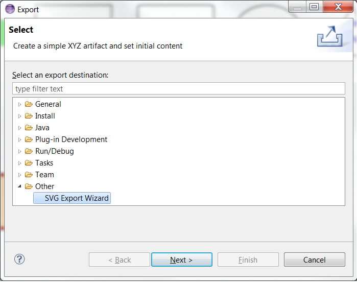
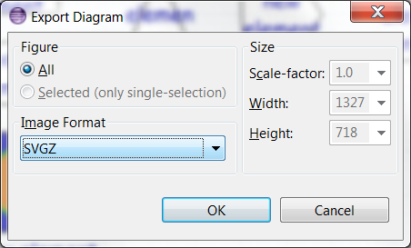

Graphiti SVG Exporter is an Eclipse plugin that has been developed inside COM (Center for Open Middleware). This Eclipse plugin generate a SVG DOM file from the Graphiti graphical metamodel using the ApacheTM Batik SVG Toolkit.
Graphiti is an Eclipse-based graphics framework that enables rapid development of state-of-the-art diagram editors for domain models. Graphiti can use EMF-based domain models very easily but can deal with any Java-based objects on the domain side as well.
Batik is a Java-based toolkit for applications or applets that want to use images in the Scalable Vector Graphics (SVG) format for various purposes, such as display, generation or manipulation.
The plugin is composed of the following Java Classes:
DiagramGraphicsAdaptor.java-. This adaptor carries out the transformation of the Graphiti graphical Metamodel into AWT Java Graphics in order to being used by Apache Batik Toolkit to generate the SVG file.
AwtService.java-. This service follows the architecture principles in Graphiti developing a service which make it easier to transform the Graphiti graphical metamodel.
IConfigurationSVGElement.java-. This interface provide a new functionality placing hooks an managing the SVG DOM tree. On this way, It is possible to include some particular details which may not be in the model. There is a default implementation (DefaultConfigurationSVGElement.java)
GraphitiDOMGroupManager.java-. This class extends DOMGroupManager class which is used by the Graphics2D SVG Generator to manage a group of Nodes that can later be added to the SVG DOM Tree managed by the DOMTreeManager.
GraphitiSVGExporter.java-. This class implements the IDiagramsExporter interface in Graphiti to export the content of a graphical viewer. It also initialize the SVG DOM document.
GraphitiDiagramLoader.java-. This class is used by the GraphitiSVGExporte to obtain the Graphiti Diagram from a URI.
SVGExportWizard.java-. This class implements the FileSystemExportWizard interface in Eclipse to export the resources from the workspace to the local file system.
There are two options for exporting SVG via graphitiSVGExporter:
+ Export Wizard: It is possible to export a bunch of diagrams to SVG files by the option Export (Selects "SVG Export Wizard" on "Other") in the Workspace Contextual Menu
+ Image Save: It is possible to export to SVG File, an opened diagram
There are some differences between the SVG exportation with GEF and this exportation (directly through the Graphiti MetaModel).
| Background Grid Layer |
|
|||||
| RoundedRectangle |
|
|||||
| Colors Styles |
|
|||||
| Clip Path |
|
|||||
| Model Modifications |
|
|||||
| New SVG Elements |
|
|||||
| Graphiti 0.10.0 Elements |
|